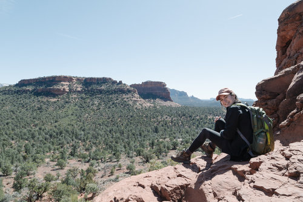

Top o' the mornin' (or afternoon or evenin') to ya!
I'm a photographer and designer based in Ann Arbor, MI. Currently a senior in the University of Michigan's School of Information, I'm majoring in information, concentrating on UX design and minoring in art and design. I have always worn many hats, artistically speaking, but I consider myself first and foremost a photographer and designer.
As a photographer I shoot a wide variety of subjects, but my focus is on capturing people and moments utilizing clean compositions and natural light. I've played around with just about every artistic medium out there, but the way a photo can tell a story/moment/feeling pulls me back again and again. I'm also starting to dip my toes into the oh-so-exciting videography world - stay tuned for my upcoming debut.
Interested in checking out more of my work? Head on over to my Instagram to see what I've been up to lately.
Learn more about my work experience by checking out my resume.
Photo by Liz Gardella.